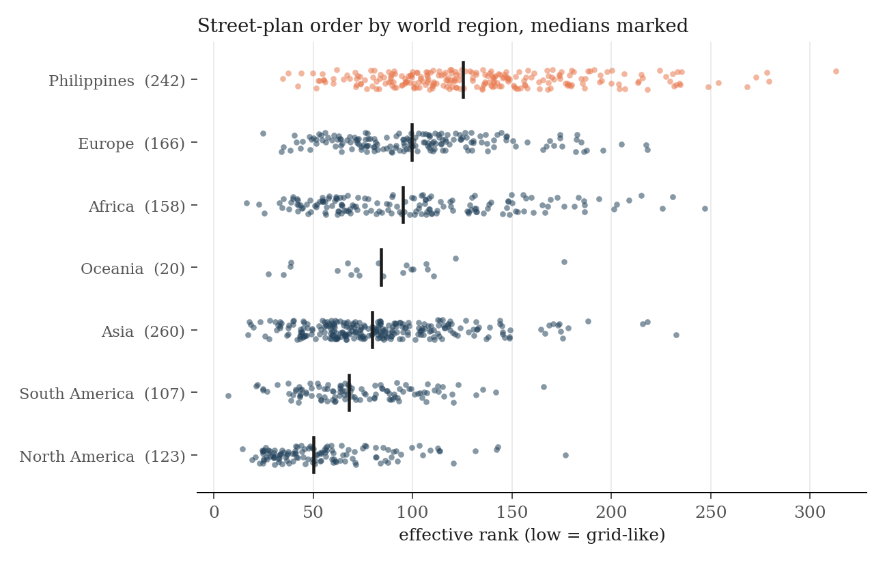
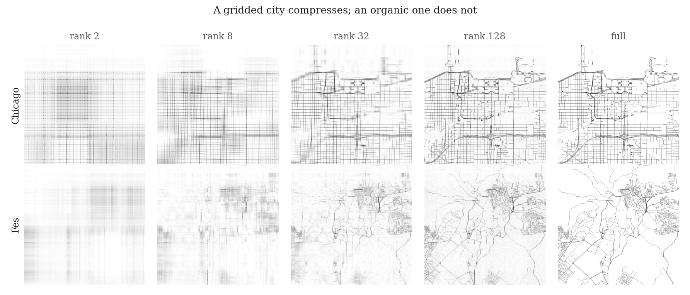

How structured is your city?
Every tile is a city rebuilt from its stripe patterns, a few at a time. Grid plans become clear first. Tangled plans stay unclear until the end. See how the number works ↓
Some cities follow a small number of clear street directions. Others contain curves, interruptions, overlapping grids, and many local patterns. This difference is easy to see, but difficult to express with one number.
Why might we care about how structured a city is? Well, street structure can shape how people move through a city, how easily they can understand it, and how the city can grow or change. It can also reflect planning decisions, geography, and long periods of incremental development. Of course, no single pattern is always better, but such differences may be valuable in regional and urban policy.
To study this problem we draw the central streets of 612 cities (with special emphasis on the Philippines) in the same 5 km square. We then rotate the image so that its main street direction points up, and measure how many horizontal and vertical stripe patterns are necessary to reconstruct it.
A simple grid needs few patterns. A more irregular plan needs many. We call this number the effective rank, a simple concept from linear algebra. A low rank indicates a plan with a small number of strong, shared directions. A high rank indicates a plan with more curves, interruptions, shifts, and competing directions.
For this project, streets include roads for vehicles and pedestrian streets in OpenStreetMap. We do not include small paths. Therefore, the measurement of cities like Fes does not include the narrow alleys in its medina (though even with this limit, Fes remains near the organic end of the scale).
What does the number measure?
A street plan can look simple for several reasons: its streets can be straight, or they can follow a small number of directions, or they can continue across long distances without stopping or shifting. Effective rank (Roy and Vetterli 2007) captures these properties together. To see how, start with matrices.
First, matrices
A matrix is a grid of numbers. A black-and-white image is a matrix: each pixel is one number. The rank of a matrix counts its independent rows and columns. A matrix has low rank when many rows repeat the same pattern, so a few rows are enough to build all the others.
The singular value decomposition, or SVD, makes this idea usable. It writes any matrix as a stack of layers. Each layer combines one row pattern with one column pattern, and each layer has a weight called a singular value. Layers with large weights carry most of the information. For an image, one layer looks like a set of horizontal and vertical stripes.
The plain rank counts every layer with a weight above zero. That count is fragile: a tiny weight counts as much as a large one. The effective rank fixes this by counting layers in proportion to their weight. An image built from two strong layers and hundreds of tiny ones has an effective rank close to 2, even though its plain rank is large.
Then, street plans
A street plan drawn in pixels is a matrix, so all of this applies directly. The SVD reconstructs the plan as a set of stripe patterns. A regular street plan becomes recognizable after only a few patterns, because many streets repeat the same rows and columns. An irregular plan needs more patterns before its structure becomes clear.
Select a city below. Move the slider to change the number of patterns in the reconstruction. A grid city becomes clear quickly because many streets share the same directions and positions. An organic city stays unclear for longer because its streets curve, stop, shift, or follow many directions.
The reconstruction shows how much of a street plan can be described with a limited number of patterns. The component count and the effective rank are related, but they are not the same quantity. The component count tells you how many patterns are currently visible. The effective rank summarises how the image information is distributed across all patterns. A city with a low effective rank concentrates much of its structure in a small number of patterns. A city with a high effective rank spreads its structure across many patterns.
What changes the rank?
Synthetic plans provide reference points for the scale. They let us change one feature at a time and observe the result.
A perfect grid has a rank of approximately 2. A grid with unequal spacing also has a rank of approximately 2. Unequal spacing alone therefore has little effect. The rank increases when streets:
- stop before they cross the full image
- shift to the side
- curve
- follow several different directions
A plan with four grids at different angles has a higher rank than one aligned grid. A plan with spokes and rings has a much higher rank. Random curves usually have ranks in the hundreds.
A short program generated each synthetic plan below. We measured these plans with the same process that we use for real cities. The number below each image is its effective rank.
Two limits of the measure
Effective rank measures the structure of the image, not only the geometry of individual streets. The amount of street data in the image can therefore affect the result. First, a larger amount of street data can sometimes decrease the rank. A very full image can be approximated by a small number of broad patterns, even when the individual streets are irregular. The three random-curve examples differ only in total street length, but they have different ranks. Second, we tested a version that measures the same 200 km of streets in every city. This adjustment controls for street length, but it can create gaps in regular plans. These gaps increase the rank. The dataset includes the adjusted result in a separate column. When you compare two cities, also compare the total street length in each window.
Put every street plan on one scale
The spectrum shows where each city lies between a simple grid and a highly irregular plan. Cities on the left have lower effective ranks. Their street structure is concentrated in fewer patterns. Cities on the right have higher ranks. Their structure is distributed across more patterns.
The synthetic plans appear at their measured positions and provide visual reference points. Dashed borders identify synthetic plans. Orange borders identify Philippine cities. Move the strip horizontally to explore. Select a plan to open its city card.
The spectrum is useful for finding surprising neighbours. Two cities can look different in detail but have similar rank because their street plans require a similar amount of structure to describe.
Where are grid-like and organic plans found?
The map shows the geographic distribution of effective rank. Light points identify more grid-like plans. Dark points identify more organic plans. The map can show whether similar street forms cluster within regions, but it does not explain why those forms developed.
Move the pointer over a point to see the city and its values. Select a point to open the full city card. Select PH to move the map to the Philippines. Use the map to find broad geographic patterns. Use the city cards and comparison view to examine individual cases.
Read one city in detail
Each city card combines the street image with several measures of urban form. The effective rank is the main measure in this project. The other values help explain why a city receives its rank and how it differs from cities with a similar score. For example:
- Orientation order measures how strongly streets follow a small number of directions.
- Street length on the main axes shows how much of the network follows the two strongest directions.
- Straightness measures how directly streets connect their endpoints.
- Block spacing estimates the repeated distance between major street lines.
- Intersection density measures how many intersections occur in each square kilometre.
- Four-way junctions and dead ends describe the types of connections in the network.
- Street km in window shows how much street data contributes to the measurement.
No single value fully describes a city. Read the measures together, especially when you compare cities.
A closer look at Philippine cities
The Philippine set contains 151 cities and municipalities: the most populous places in the 2024 census, plus Vigan. The Philippine Internal Migration Dataset supplies the city list, population values, and migration values.
The country contains a wide range of street forms. Koronadal is near the grid-like end of the Philippine scale. Sorsogon is near the organic end. Many cities combine a regular central grid with later growth that follows roads, terrain, coastlines, or municipal boundaries. The strips below show the two ends of the Philippine distribution.
Most grid-like plans
Most organic plans
Browse street plans as images
The gallery makes it easier to compare the plans visually. Sort the cities by effective rank to move from regular grids to more organic forms. Filter the set to focus on Philippine cities or the full world sample. Look for the features that increase rank:
- grids that change direction
- roads that stop or shift
- curved corridors
- disconnected local layouts
- several competing street orientations
Select a city to open its full card and view the associated measurements.
Compare two cities directly
Effective rank is most useful when it supports a visual comparison. Enter a city name in each field. The two cards show the plans and measurements together. Start with the effective rank. Then compare orientation order, street length on the main axes, intersection density, and total street length.
Cities can have similar ranks for different reasons. One city can contain several clear grids at different angles. Another can contain curves and many short local streets. The rank indicates that both plans need a similar amount of structure to describe, but the supporting measures show how that complexity arises. When the total street lengths differ greatly, interpret the rank comparison with care.
How does rank relate to other city measures?
The charts test whether effective rank tracks familiar properties of street networks and cities. Select a variable for the horizontal axis. Each point represents one city. The note below the chart gives the Spearman rank correlation.
A strong correlation means that cities with higher values on one measure also tend to have consistently higher or lower ranks. A weak correlation means that the two measures describe different aspects of urban form. For example, effective rank and orientation order are related because both respond to shared street directions. They are not identical: orientation order measures direction, while effective rank also responds to curves, offsets, interruptions, and overlapping layouts. Correlation does not show that one property causes the other.
Select a correlate
Each point is one city. The note below gives the Spearman rank correlation.
Compare regions
Each point represents one city. The black line shows the median for the region. The Philippines appears as a separate group.

The spread within each region is often as important as the difference between regional medians. Cities in the same region can have very different plans because of geography, planning history, age, growth, and the scale of the measured centre.
The measure in one image
Chicago becomes recognizable with approximately 32 patterns. Fes remains unclear with 128 patterns. This comparison shows the central idea of the measure. Chicago concentrates much of its street structure in a small number of repeated directions. Fes distributes its structure across many local patterns.

From streets to one number
For each city, we get street data from OpenStreetMap in a fixed square at the city centre. The square is 5 km wide and 5 km high. We convert the coordinates to metres. We then calculate the main street direction from a direction histogram. Street length determines the weight of each direction. We rotate the street plan until the main direction points up. We draw the rotated streets in an image of 1024 by 1024 pixels. Each street line is one pixel wide.
We then calculate the singular values of the image. The effective rank is the participation ratio of the squared singular values. It estimates how many patterns contain the image energy. This estimator is the n2 measure in the effective-dimensionality tutorial by Del Giudice (2021).
Why rotate the plan?
SVD uses horizontal and vertical patterns. A regular grid that is drawn at an angle can therefore appear more complex than the same grid drawn upright. The Eixample grid in Barcelona has an angle of 45.5 degrees. We detect this direction and rotate the image before we calculate its rank. Without this step, the measure would confuse orientation with disorder.
Other measurements
The dataset also contains standard street-network measures: intersection density, the proportion of four-way junctions, the proportion of dead ends, street straightness, orientation entropy and order, the proportion of street length on the two main axes, and block spacing. We calculate block spacing from the main Fourier peak of the street-plan image. The result estimates the distance between repeated parallel street lines. The values agree with known examples. Manhattan has an estimated spacing of 81 m. Barcelona has an estimated spacing of 135 m, which includes an Eixample block and its adjacent street. These measures are not alternatives to effective rank. They help interpret it.
What the rank does not tell us
Effective rank is a measure of the street image inside one fixed window. It is not a complete measure of a city.
- OpenStreetMap coverage is not equally complete in all locations. We add a flag to Philippine towns that have sparse street data.
- The 5 km window measures the city centre. It does not measure the full metropolitan area. A city can have a regular centre and irregular outer growth, or the reverse.
- Population values apply to the full city, while the street measurements apply only to the 5 km window. These values therefore cover different geographic areas.
- Some cities contain two or more grids with different orientations. We align the image with the strongest grid. The other grids then increase the rank. This is appropriate if the goal is to measure the complexity of the full plan, but it means that a city with several regular grids can receive a high score.
- We do not include paths with the OpenStreetMap footway tag. This exclusion is important for medinas, pedestrian districts, and informal settlements.
- The effective rank also depends on the quantity of street data in the image. Compare the street-length value when you compare cities.
A high rank does not mean that a plan is bad, inefficient, or unplanned. A low rank does not mean that a plan is good. The number describes geometric structure, not urban quality.
Inspect the complete data
The table contains the measurements for all cities. Select a column heading to sort the rows. Use the table to find cities with high or low values, check the measurements shown in the visualisations, and identify cases for closer comparison. The repository contains the full CSV file, including all measurements and data-quality flags.
Cite this project
@misc{africa2026streetrank,
author = {Africa, David Demitri},
title = {Street rank: how structured is your city?},
year = {2026},
url = {https://github.com/DavidDemitriAfrica/street-rank}
}